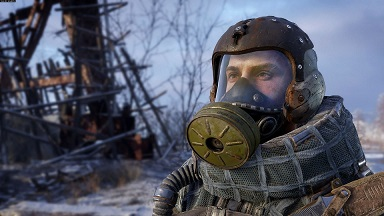

АРТЕМ
НАШ ПРОТАГОНИСТ
«МЫ НЕ БЫЛИ ПРЕДНАЗНАЧЕНЫ ДЛЯ ЖИЗНИ В ПЕЩЕРАХ.»
Артем родился в Москве за несколько лет до начала ядерной войны и прожил в Метро всю жизнь, неоднократно рискуя ею, чтобы защитить свой дом. Он одержим идеей найти жизнь за пределами тоннелей Метро и регулярно выбирается на поверхность с радиостанцией, пытаясь установить связь с внешним миром. Он действительно полон решимости доказать, что за пределами Метро есть жизнь.